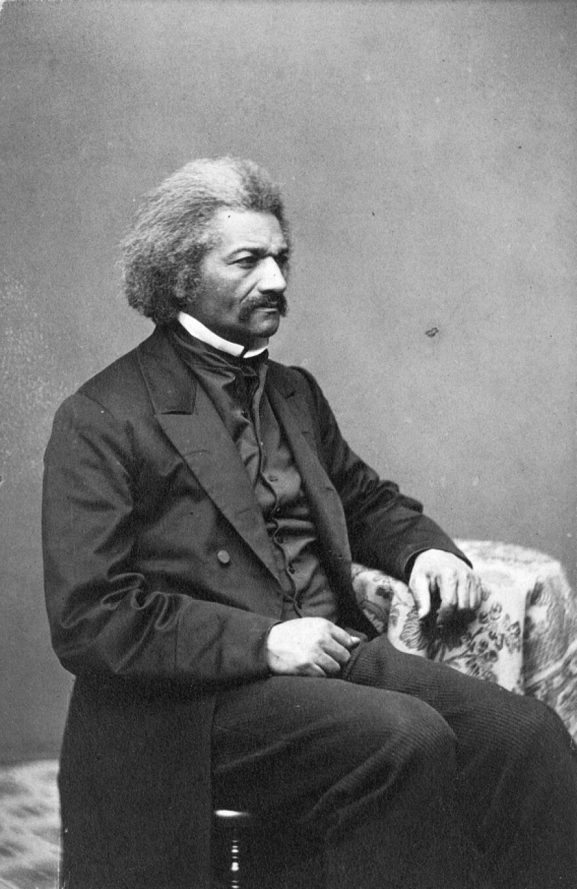
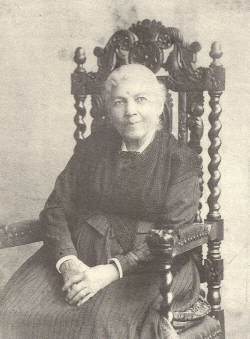
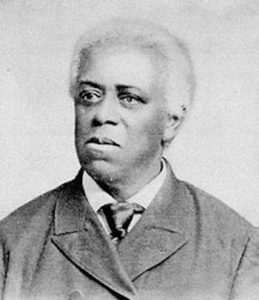
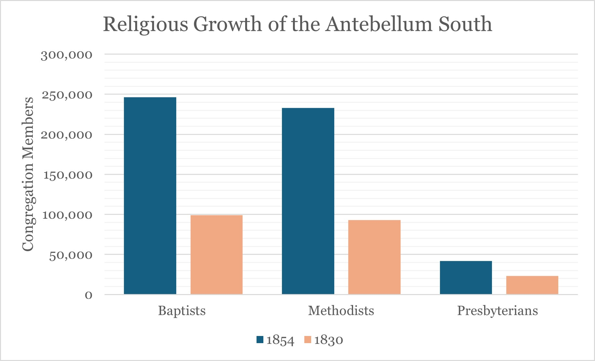
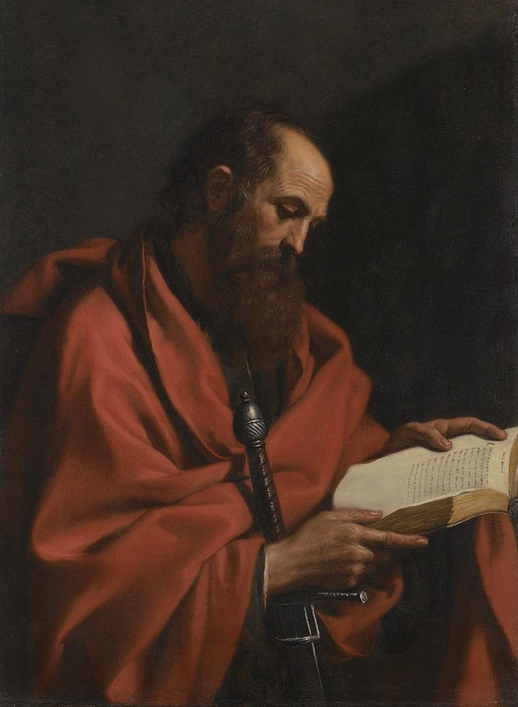

How Did Pro-Slavery Supporters Justify the Ethics, Morals, and Historical Precedents of Slavery?
The literary works of Frederick Douglass, Harriet Jacobs, and David Walker, really highlight issues in the system of slavery that existed in the United States, until it was outlawed in 1865, making one question how others ever believed slavery was morally and ethically right. How can men and women justify the systematic sexual abuse exercised on Africans and African descendent slaves as mentioned in Jacobs’s story? How could they possibly have justified the brutality exercised on human beings as is seen in Douglass’s narrative? How could these self-identified “Christians” possible justify their treatment of other human beings as Walker’s appeal questions? Many of the arguments in defense of slavery are largely justified through religion and through the historical precedent of slavery in many cultures, which Douglass, Jacobs, and Walker all seem to mention at certain points in their works.
Frederick Douglass's A Narrative of the Life of Frederick Douglass
Frederick Douglass’s slave narrative, A Narrative of the Life of Frederick Douglass, shows the grotesque and brutal mindset of slave owners as well as the use of religion to support a profitable lifestyle. This mindset is easily first seen in chapter four of the narrative when he describes an incident with a slave named Demby and an overseer, Mr. Gore. In this scene, Demby runs from Mr. Gore in the middle of a whipping into a creek to cool the sting on his back; when the overseer demands that Demby leave the water, he refuses and is then shot for his disobedience (Douglass 330-1). Mr. Gore is described in this scene as not showing any hesitance or internal debate over ending a human life, showing that his morals have been manipulated by the society he lives in. Religion forms a significant part of this culture and teaching of ethical treatment of others imparted on the people.
Douglass discusses the influence of religion at length in his appendix as well as in his narrative in reference to very religious slaver owners. He writes, “I should regard being the slave of a religious slave master the greatest calamity that could befall me” (Douglass 369). Douglass goes on to explain that he noticed that the cruelest of slave owners were often the most self-righteous and involved in their religion and religious group. He describes one reverend whipping a female slave so often that her back was raw for weeks, using the philosophy that “it is the duty of a slave owner to occasionally whip a slave, to remind him of his master’s authority” (Douglass 370). From his own experience with his former master Thomas Hugh, a devoutly religious man himself, he shares the cruelty he endured under his ownership.
Thomas Hugh did not provide his slaves with enough food, which is one of the lines that even many slaveholders frown upon (Douglass 351). It signifies the ultimate disregard for life, as even livestock is treated to enough food to sustain themselves. As can be seen in the previous examples, the cruelty can be largely be connected to religion and religious teachings as people internalize the ethical justifications taught to them by their preachers. Ethics then become internalized personal morals. Douglass discusses these warped ethical teachings and the economic reasoning for the twisted worship to support the institution of slavery in his appendix.
Harriet Jacobs's Incidents in the Life of a Slave Girl
In her narrative, Incidents in the Life of a Slave Girl, Harriet Jacobs expresses some of the same sentiments towards religion and how it contributes to the institution of slavery. Here, however, the brutal nature of slavery, while still showing violent actions, seems to more often reflect an obscene environment. Beginning at the young age of 15, Dr. Flint begins to make sexual advances towards her, expressing a desire for sexual relations (Jacobs 436). While modern society would quickly condemn him as a morally corrupt pedophile, this was not uncommon at the time, as Jacobs makes sure to highlight. Because he is granted unchecked power over his slaves, expressing his ownership in this way is another display of his power as well as behavior he probably witnessed from his father during his youth. In this way, the cycle of rape and sexual assault perpetuates itself. The obscenity and tension that this behavior brings into the home, into everyday life, is stifling.
Jacobs, at one point, retells a story of a young women who could support herself and treated her slaves well; however, when she married, she lost all the power she had and went mad over her husband actions towards the slaves, specifically his infidelity with the female slaves (Jacobs 459-61). Having to live every day looking at the faces of her husband's unfaithfulness, someone she had thought loved and cared for her, drove her to such madness. Most likely, the same is true of Mrs. Flint, explaining her aggressive actions toward Jacobs because she does not have the power to stop what her husband it is doing, only the power to order to the slaves in ways that do not contradict her husband.
Dr. Flint also appeared to grow crueler the more religious he became, but what is most interesting with Jacobs’s narrative is how the slave owners try to indoctrinate the belief of African inferiority through sharing their religious beliefs to pacify the slaves. The Reverend Pike that she describes lectures the slaves on their need to obey their masters saying, “If you disobey your earthly master, you offend your heavenly master” (Jacobs 480). Clearly this approach does not work, and the slaves quit attending his masses. Jacobs later states, referencing the bible, to “talk to American slaveholders as you would talk to savages in Africa,” and to explain to them the atrocities they commit in their own home while spread their “peaceful” religion around the globe (484). Her message seems to be very similar to Douglass’s in that slaveholders have used Christianity as a shield to justify unspeakable actions.
Walker's Appeal & Douglass's Fourth of July Speech
Walker, in his appeal, approaches the same ideas from a different direction. His appeal calls for action form Black northerns and southern slaves by highlighting the atrocities committed in the practice of slavery. He relates his reasoning back to stories in the Bible and historical precedents. He dismantles their arguments of those biblical parables and reference to other cultures’ slavery systems throughout history to display their corrupted morals. He says in the beginning while referencing the Bible stories told to slaves by white slave owners, “they tell us of the Israelites in Egypt, the Helots in Sparta, and of the Roman Slaves” (Walker 3). Here, while yes there are Bible stories about these groups, there is also an underlying historical significance here as well.
Though it is agreed by historians the Israelites in Egypt are more or less a national myth rather than fact, Greek and Roman slaves did exist. Emroy University’s Micheal C. Carlos Museum claim in their statement for a 2021 digital exhibition that “Estimates suggest that in Athens between 450 and 320 BCE, 80 to 100,000 people may have been enslaved, amounting to one in four inhabitants; and that by the late first century BCE in Italy alone, 1 to 1.5 million people were enslaved, representing 15 to 25 percent of the population” (“Confronting Slavery”). Although these societies did not discriminate based on ethnicity or skin color, they also practiced chattel slavery, “a form of absolute servitude,” discriminating instead against foreign, non-citizens (“Confronting Slavery”). Pro-slavery supporters used the prevalence of slavery in these hailed classical and great societies to argue against abolition. They turned a blind eye to the moral implications of slaver and abolitionist arguments in favor of an argument consisting of, ‘slaves have existed forever, its natural.’
Walker’s main point and argument to devalue the proslavery defense is to insist that American Slavery is the worst treatment of slaves, that the Greek and Roman slaves were treated kinder. His argument, while unsound, makes a point to go after religion and religious justifications as well as historical precedence used to justify slavery in the American south. This shows the significance of explanations under the same ideas used by proslavery supporters to justify the practice of slavery.
Returning to Douglass for a moment. He does something very similar to Walker’s appeal in his “The Meaning of Fourth of July for the Negro” speech. When he was asked to speech at a Fourth of July celebration he asked the audience the following questions:
Fellow-citizens, pardon me, allow me to ask, why am I called upon to speak here today? What have I, or those I represent, to do with your national independence? Are the great principles of political freedom and of natural justice, embodied in that Declaration of Independence, extended to us? and am I, therefore, called upon to bring our humble offering to the national altar, and to confess the benefits and express devout gratitude for the blessings resulting from your independence to us? (Douglass).
In this way, Douglas catches his audiences’ attention as he begins to highlight the false claims of the proslavery opposition, but it is clear in how he chooses to word his argument that he is exasperated. He is aware of the opposition’s religious justification, choosing to respond with, “What, then, remains to be argued? Is it that slavery is not divine; that God did not establish it; that our Doctor of Divinity are mistaken? There is blasphemy in the thought. That which is inhuman, cannot be divine! Who can reason on such a proposition?” (Douglass). He is clearly tired of religion being used to serve an evil practice when it should be obvious that that is not the proper and right way to behave and treat others.
Justification Through Religion
While many arguments were made by those in slave-owning states to justify the practice of owning another human being like chattel, one most influential to the people of the antebellum South is the religious justifications spoken by preachers in local communities. Religion was, and remains, a larger part of southern culture. According to James Farmer in his book The Metaphysical Confederacy, “between 1830 and 1854, [the number of] Baptists grew from 99,083 to 246,225 members, while the corresponding numbers for Methodists were 92,740 and 232,715, and for Presbyterians 23,120 and 41,750” (12). There were also many colleges erected in this time funded by religious groups, furthering the influence of religious groups and their teaching over southern society.
Many of the proslavery validations from religion and the Bible root from, “the disturbing silence of Jesus Christ on slavery...[and] the perhaps more disturbing outspokenness of them Apostle Paul” (Harrill 150). These two grey areas allow for argument and contention over the supportiveness of the Bible to both the proslavery and abolitionist perspectives. By adhering to literal readings and understands of the Bible, proslavery defenders gain support amongst the more ordinary citizen. Whereas abolitionist interpretations were usually created with more of the sentiment of Christian goodwill, and not as easily understood by ordinary people. Orlando Patterson points out his article Slavery that slavery was an accepted practice in the modern world because “slavery could be shown to be an institution that was sanctioned by the Old Testament, and Pauline theology” (408). Some may question how the Bible, the same literary work that people study today for teachings of morality and guidance, supports the practice of slavery, and what is Pauline theology? Though J. Albert Harrill’s article focuses on the use New Testament in its justifications, he provides some explanation of Pauline theology.
As previously mentioned, the Apostle Paul was very outspoken about slavery. His letter to Philemon was specifically targeted by proslavery supporters as it references his return of a slave to their owner, Philemon, as well as other remarks form Paul such as, “Slaves, obey your earthly masters with fear and trembling” (qtd in Harrill 155). Proslavery supports grasped onto this as proof that the Bible supported the institution of slavery, and, therefore, created what is known as Pauline theology, in which the teachings of Paul were combined and taught as the morals for parishioners to follow.
Where Harrill has passed over the use of the Old Testament in defense of slavery, Larry Morrison has chosen to examine their justifications in his article The Religious Defense of American Slavery Before 1830. As Morrison says, “The foundation upon which the slaveholding ethic and the proslavery argument was built was the scriptural defense of slavery” (16). This just further proves the importance of a Biblical defense to the proslavery perspective. He specifies, just as Harrill did, that the proslavery perspective relies heavily on literal reading of the text and was thereby justified and morally correct (Morrison 16). By internalizing these corrupted morals, they became the ethic of the southern society, and, more than that, it became the accepted reality for the rich and elite. Fanny Kemble was a notable British actress before her marriage to Peirce Butler, who turned out to be the nephew of a wealth plantation owner (Clinton 74-5). In an article about her life and her experiences seeing the horrors of American slavery, Catharine Clinton shows that these morals that are taught through religious literature have become ethic adopted by slave holders and their families as Kemble discover the horrors that her husband is capable of.
Justification Through Precedent
The other main support to the proslavery argument is the use of historical figures and precedents. Many times, this includes refences to the Greek Helots, the Roman slaves, and biblical references to the Israelites, however, Aristotle’s Poetics is also included. The Correct Concept of Justice, written by Bernard Yack states that the philosopher’s document was claimed by proslavery supporters to accept the institution of slavery since Aristotle makes “claims about the naturalness of slavery” (644). Nigel Pleasants joins in this conversation by saying:
Aristotle's motivation for his notorious justification of slavery evidently derives from the fact, to which he adverts, that some ancient Greeks had denied that slavery is a condition to which any human being is befitted by nature and who concluded that it was therefore an unjust imposition.
Basically, Aristotle views slavery as a punishment or repayment, something which anyone could be condemned to. In other words, he did not agree with slavery as a chattel system. Yack phrases it as the difference “between slavery according to nature or convention" (646). In his view, slavery in accordance with nature serves the purpose of justice, but slavery of convention, what was seen in the American slavery system, does not serve this purpose and is therefore unjust.
Additionally, there was criticism of slavery centuries before the abolitionist movement, though they were largely abstract ideas that came from sources unable to change the conditions. It was culturally conditioned into society to not acknowledge the moral wrongness of the practice. Pleasant describes the sympathy for the plight of slaves as "passive sympathy,” or, in other words, people would feel pity for them and lament that there is nothing they could do to help, similar to how people view today’s starving population (Pleasants). Ignoring the problem as people had allowed it to continue in multiple forms until people could find a way to justify otherwise and fight back.
Another intensely debated line of justification by southern politicians is the precedent of slavery in the American colonies before the formal existence of the United States of America as a unified country. In other words, what right does the federal government have to dismantle a political structure crucial to the South’s daily life when it had existed since before the establishment of the country. John C. Calhoun, and American statesman and political theorist serving as the seventh vice president of the United States from 1825 to 1832, argued that slavery was beneficial for both slave owners and slaves. In his first appeal, he claimed “the Central African race...had never existed in so comfortable, so respectable, or so civilized a condition, as that which it now enjoyed in the Southern States” (Calhoun). Under this logic he tried to argue that the system that was ‘beneficial to both’ should be left alone.
Closing Remarks
Though time has passed the scars left by slavery, and the racial prejudice form by its justifications linger. Most people will not acknowledge it as a problem they need to concern themselves with. However, healing such wounds can only happen when everyone can acknowledge the atrocities of the past and actively work to ensure they are not repeated. The justifications created by proslavery supporters brought on racism ideologies, which still affect people today. Granted, society is much improved from what it once was, but that gap has yet to be fully bridged. Reading novels and similar works can reveal the true nature of such horrible practices. However, research into and understanding how people came to believe such ideas can provide its reader with a fuller understanding of the circumstances. Hopefully, further understanding can aid the future in repairing this damage and prevent it from recurring. The past can never be altered or changed, but how can the United States ever hope to bridge the gap and repair the damage without understand the mistakes made and beliefs that lead to them?
Works Cited
Douglass, Frederick. "A Narrative of the Life of Frederick Douglass". The Classic Slave Narratives, Henry L. Gates, Signet Classics, 2012.
Douglass, Frederick. "Africans in America/Part 4/Frederick Douglass Speech." PBS, Public Broadcasting Service.
Calhoun, John. Union and Liberty: The Political Philosophy of John C. Calhoun. Liberty Fund, 1811. https://oll.libertyfund.org/titles/calhoun-union-and-liberty-the-political-philosophy-of-john-c-calhoun. Accessed 28 Nov. 2024.
Clinton, Catherine. "Fanny Kemble's Journal: A Woman Confronts Slavery on a Georgia Plantation." Frontiers: A Journal of Women Studies, vol. 9, no. 3, 1987.
“Confronting Slavery in the Classical World.” Emroy University, https://carlos.emory.edu/exhibition/confronting-slavery-classical-world. Accessed 28 Nov. 2024.
Harrill, J. Albert. “The Use of the New Testament in the American Slave Controversy: A Case History in the Hermeneutical Tension between Biblical Criticism and Christian Moral Debate.” Religion and American Culture: A Journal of Interpretation, vol. 10, no. 2, University of California Press, 2000, pp. 149–186. JSTOR, www.jstor.org/stable/1123945. Accessed 15 Oct. 2019.
Jacobs, Harriet. “Incidents in The Life of a Slave Girl”. The Classic Slave Narratives, Henry L. Gates, Signet Classics, 2012.
Morrison, Larry R. "The Religious Defense of American Slavery Before 1830." The Journal of Religious Thought, vol 37, no 2, 1980. Fall80/Winter81 1980, pp. 16-29. Accessed 10 December 2019. http://www.kingscollege.net/gbrodie/The%20religious%20justification%20of%20slavery%20before%201830.pdf
Patterson, Orlando. “Slavery.” Annual Review of Sociology, vol. 3, Annual Reviews, 1977, pp. 407–449, JSTOR, www.jstor.org/stable/2945942. Accessed 15 Oct. 2019.
Pleasants, Nigel. "Moral argument is not enough: the persistence of slavery and the emergence of abolition." Philosophical Topics, vol. 38, no. 1, 2010, p. 159+. Literature Resource Center, https://link.gale.com/apps/doc/A284016201/GLS?u=sain20269&sid=GLS&xid=632260eb. Accessed 14 Oct. 2019.
Walker, David. “Walker's Appeal.” Documenting the American South, 2001, https://docsouth.unc.edu/nc/walker/walker.html.
Yack, Bernard, and Fred D. Miller. “The Correct Concept of Justice.” The Review of Politics, vol. 58, no. 3, Cambridge University Press, 1996, pp. 644–646. JSTOR, www.jstor.org/stable/1408024. Accessed 15 Oct. 2019.